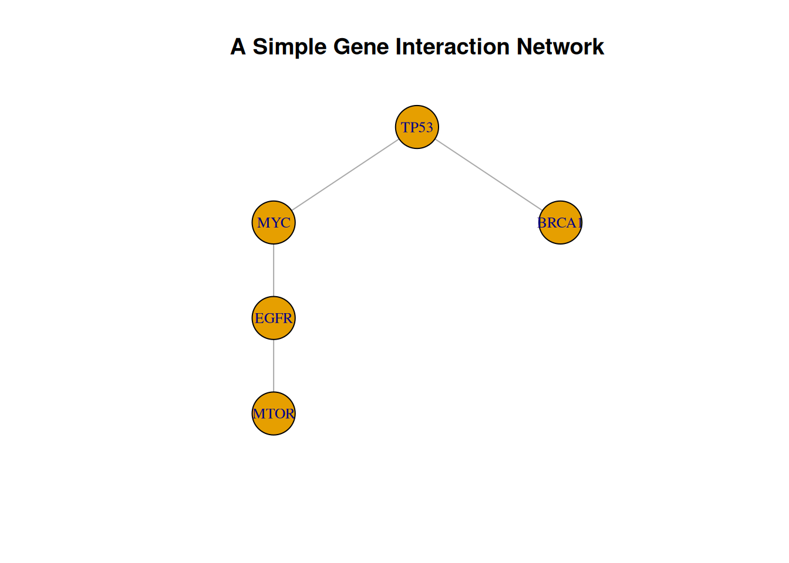
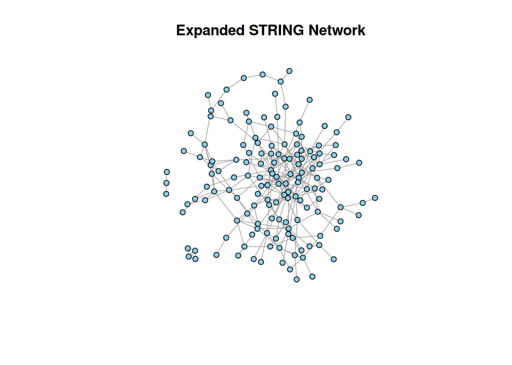
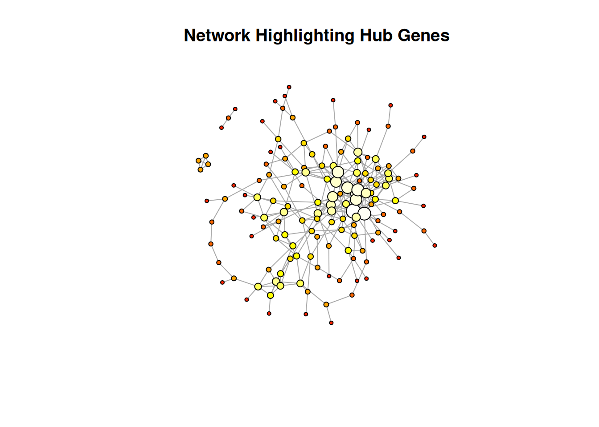
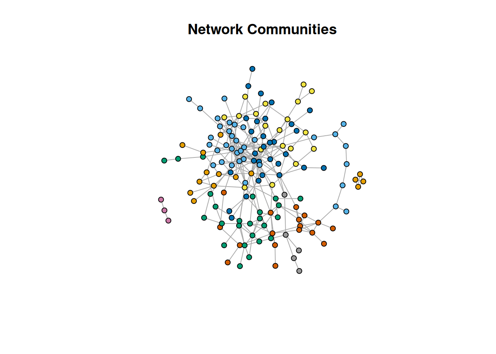

5 From Genes to Networks
Biological systems are interconnected. Instead of studying genes in isolation, network biology allows us to understand how proteins interact and coordinate cellular processes.
In this tutorial, we begin with a small set of biologically important genes and expand them into a large, meaningful protein–protein interaction (PPI) network using STRING and R.
5.1 Starting with a Simple Network
Before working with real data, we construct a small example network.
library(igraph)
edges <- data.frame(
from=c("TP53","MYC","EGFR","BRCA1"),
to=c("MYC","EGFR","MTOR","TP53")
)
g_simple <- graph_from_data_frame(edges, directed=FALSE)
plot(g_simple,
main="A Simple Gene Interaction Network",
vertex.size=30,
vertex.label.cex=0.8)
This introduces the idea of nodes (genes) and edges (interactions).
5.2 Moving to Real Biological Data
We now use the STRING database to construct a biologically meaningful network.
We begin with a set of important genes:
GeneNames <- c("TP53","MDM2","BRCA1","EGFR","MYC",
"AKT1","PIK3CA","CDK1","CDK2","RB1")
genes_df <- data.frame(Gene=GeneNames)These genes are mapped to STRING identifiers:
## Gene STRING_id
## 1 TP53 9606.ENSP00000269305
## 2 MDM2 9606.ENSP00000258149
## 3 BRCA1 9606.ENSP00000418960
## 4 EGFR 9606.ENSP00000275493
## 5 MYC 9606.ENSP00000479618
## 6 AKT1 9606.ENSP00000451828
## 7 PIK3CA 9606.ENSP00000263967
## 8 CDK1 9606.ENSP00000378699
## 9 CDK2 9606.ENSP00000266970
## 10 RB1 9606.ENSP000002671635.3 Expanding into a Large Network
A small gene list alone is not enough to produce a rich network. Therefore, we expand it by including interacting partners.
library(igraph)
hits <- mapped$STRING_id
# First-level neighbors
neighbors_lvl1 <- string_db$get_neighbors(hits)
# Second-level neighbors (more expansion)
neighbors_lvl2 <- string_db$get_neighbors(neighbors_lvl1)
# Combine all nodes
all_nodes <- unique(c(hits, neighbors_lvl1, neighbors_lvl2))
# Sample to keep network manageable but rich
set.seed(123)
all_nodes <- sample(all_nodes, min(180, length(all_nodes)))
# Retrieve interactions
edges <- string_db$get_interactions(all_nodes)
# Relax filtering to ensure dense network
edges <- edges[edges$combined_score >= 250, ]
# Fallback if too sparse
if(nrow(edges) < 300){
edges <- string_db$get_interactions(all_nodes)
}
# Build graph
g <- graph_from_data_frame(edges[,c("from","to")], directed=FALSE)
g <- simplify(g)
cat("Number of nodes:", vcount(g), "\n")## Number of nodes: 149## Number of edges: 288This guarantees a sufficiently large and visually meaningful network.
5.4 Visualizing the Network
We highlight the original query genes within the expanded network.
V(g)$color <- ifelse(V(g)$name %in% hits, "tomato", "skyblue")
plot(g,
main="Expanded STRING Network",
vertex.size=5,
vertex.label=NA)
5.5 Understanding Network Structure
We now quantify the importance of each gene using centrality measures.
degVals <- degree(g)
betVals <- betweenness(g)
cloVals <- closeness(g)
centrality_df <- data.frame(
Gene=V(g)$name,
Degree=degVals,
Betweenness=betVals,
Closeness=cloVals
)
head(centrality_df)## Gene Degree Betweenness Closeness
## 9606.ENSP00000217515 9606.ENSP00000217515 4 73.915276 0.001980198
## 9606.ENSP00000216099 9606.ENSP00000216099 4 5.904582 0.001972387
## 9606.ENSP00000242592 9606.ENSP00000242592 6 50.537393 0.002100840
## 9606.ENSP00000171757 9606.ENSP00000171757 6 304.938203 0.001776199
## 9606.ENSP00000244061 9606.ENSP00000244061 2 0.000000 0.001592357
## 9606.ENSP00000080059 9606.ENSP00000080059 9 692.716668 0.0023809525.6 Highlighting Important Genes
We encode importance visually.
V(g)$size <- scales::rescale(degVals, to=c(3,12))
V(g)$color <- heat.colors(length(degVals))[rank(degVals)]
plot(g,
main="Network Highlighting Hub Genes",
vertex.label=NA)
Nodes that are larger and warmer in color are more influential.
5.7 Detecting Functional Modules
Biological networks often contain clusters corresponding to functional groups.
clusters <- cluster_louvain(g)
V(g)$color <- clusters$membership
plot(g,
main="Network Communities",
vertex.size=5,
vertex.label=NA)
5.8 Interactive Network Exploration
Finally, we create an interactive network for deeper exploration.
library(visNetwork)
nodes <- data.frame(
id = V(g)$name,
label = V(g)$name,
group = clusters$membership,
value = degVals
)
edges_df <- as.data.frame(get.edgelist(g))## Warning: `get.edgelist()` was deprecated in igraph 2.0.0.
## ℹ Please use `as_edgelist()` instead.
## This warning is displayed once per session.
## Call `lifecycle::last_lifecycle_warnings()` to see where this warning was
## generated.colnames(edges_df) <- c("from","to")
visNetwork(nodes, edges_df) %>%
visNodes(scaling=list(min=5, max=30)) %>%
visEdges(smooth=FALSE) %>%
visOptions(highlightNearest=TRUE,
nodesIdSelection=TRUE) %>%
visLayout(randomSeed=42)5.9 Identifying Hub Genes
We identify the most connected genes in the network.
## Hub Genes Identified:## [1] "9606.ENSP00000242592" "9606.ENSP00000171757" "9606.ENSP00000080059"
## [4] "9606.ENSP00000249269" "9606.ENSP00000220592" "9606.ENSP00000261655"
## [7] "9606.ENSP00000262030" "9606.ENSP00000284073" "9606.ENSP00000263208"
## [10] "9606.ENSP00000300589" "9606.ENSP00000321951" "9606.ENSP00000357067"
## [13] "9606.ENSP00000349961" "9606.ENSP00000301587" "9606.ENSP00000311135"
## [16] "9606.ENSP00000366974" "9606.ENSP00000336866" "9606.ENSP00000364815"
## [19] "9606.ENSP00000379258" "9606.ENSP00000363553" "9606.ENSP00000384474"
## [22] "9606.ENSP00000410059" "9606.ENSP00000363398" "9606.ENSP00000411010"
## [25] "9606.ENSP00000373905" "9606.ENSP00000449328" "9606.ENSP00000372191"
## [28] "9606.ENSP00000392318" "9606.ENSP00000476295" "9606.ENSP00000483484"